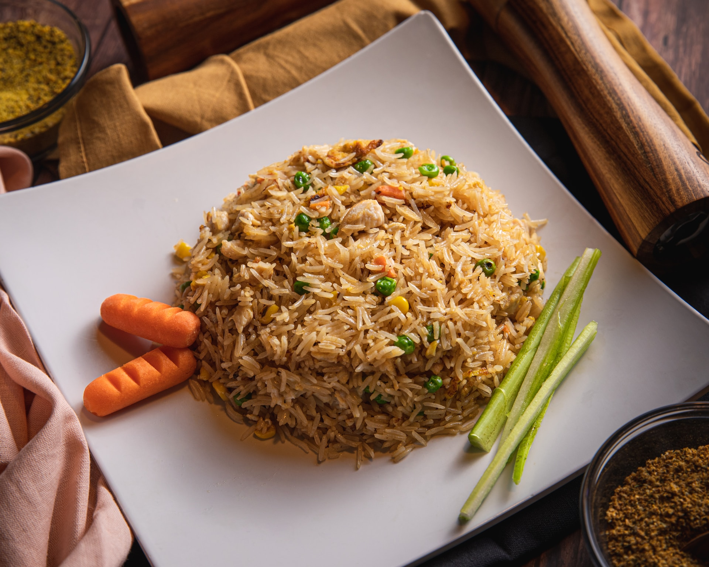

Meal Recipes
Breakfast Recipe: Scrambled Egg Avocado Toast/

Scrambled Egg Avocado Toast is a delicious and nutritious breakfast option. Whisked eggs are gently scrambled
and
served on top of mashed avocado spread on toasted whole wheat bread slices. It's a perfect combination of
protein,
healthy fats, and carbohydrates to kickstart your day.
- Toast the bread slices.
- In a bowl, whisk the eggs and season with salt and pepper.
- Heat a non-stick pan over medium heat and pour in the whisked eggs.
- Gently scramble the eggs until cooked to your liking.
- Mash the ripe avocado and spread it evenly on the toasted bread slices.
- Top the avocado toast with the scrambled eggs.
- Season with additional salt and pepper if desired.
Alternative Toppings:
- Add sliced tomatoes or cherry tomatoes on top of the mashed avocado.
- Sprinkle crumbled feta cheese or goat cheese over the scrambled eggs.
- Try a sprinkle of chili flakes or hot sauce for a spicy kick.
- Add a handful of baby spinach or arugula as an extra layer of greens.
Alternative Bread Options:
- Use multigrain bread, sourdough bread, or rye bread instead of whole wheat bread.
- Try a bagel or an English muffin as a base for your avocado and eggs.
- Use gluten-free bread for a gluten-free version of the recipe.
- Experiment with a croissant or a tortilla for a unique twist.
Alternative Seasonings:
- Sprinkle smoked paprika or cumin on the scrambled eggs for extra flavor.
- Try adding chopped fresh herbs such as parsley, cilantro, or chives to the avocado spread.
- Season with a dash of garlic powder or onion powder for a savory twist.
- Experiment with a squeeze of lemon juice or a drizzle of balsamic glaze for added tanginess.
Lunch/Dinner Recipe: Grilled Chicken Quinoa Salad

Grilled Chicken Quinoa Salad is a satisfying and balanced meal. It features grilled chicken breast, cooked
quinoa,
mixed salad greens, cherry tomatoes, cucumber, red onion, and crumbled feta cheese. The salad is tossed with a
tangy lemon vinaigrette dressing, creating a flavorful and refreshing dish.
- In a large bowl, combine the cooked quinoa, mixed salad greens, cherry tomatoes, cucumber, red onion, and
feta
cheese.
- Toss the ingredients together.
- Top the salad with the sliced grilled chicken breast.
- Drizzle the lemon vinaigrette dressing over the salad.
- Mix well to combine all the flavors.
Alternative Vegetable Options:
- Swap cherry tomatoes with roasted butternut squash or roasted beets.
- Try adding sliced avocado or grilled zucchini for extra creaminess and flavor.
- Incorporate blanched green beans or steamed broccoli for added crunch and nutrients.
- Include sliced bell peppers or shredded carrots for a pop of color and texture.
Alternative Dressing Options:
- Replace lemon vinaigrette with balsamic vinaigrette or honey mustard dressing.
- Try a creamy avocado dressing or tahini-based dressing for a different flavor profile.
- Experiment with a citrusy lime cilantro dressing or a ginger soy dressing for an Asian-inspired twist.
- Use a Greek yogurt-based dressing for a lighter and tangier option.
Lunch/Dinner Recipe: Veggie Stir-Fry with Brown Rice

Veggie Stir-Fry with Brown Rice is a quick and easy meal packed with colorful vegetables and wholesome brown
rice.
Assorted vegetables are stir-fried with garlic, ginger, and soy sauce, creating a flavorful and nutritious dish.
It's a great option for a satisfying lunch or dinner.
- Heat sesame oil in a large pan or wok over medium heat.
- Add minced garlic and grated ginger to the pan and sauté for a minute.
- Add the assorted vegetables and stir-fry until they are cooked but still crisp.
- Drizzle soy sauce or tamari over the vegetables and toss to coat evenly.
- Add the cooked brown rice to the pan and stir-fry for a few minutes to heat through.
- Remove from heat and garnish with chopped green onions and sesame seeds if desired.
Alternative Protein Sources:
- Add tofu or tempeh cubes for a vegetarian protein option.
- Sauté sliced chicken breast or shrimp along with the vegetables for a meat-based protein option.
- Include cooked chickpeas or black beans for a plant-based protein boost.
- Top the stir-fry with toasted nuts like almonds or cashews for added protein and crunch.
Alternative Carbohydrate Sources:
- Replace brown rice with quinoa or whole wheat noodles.
- Try cauliflower rice or zucchini noodles for a low-carb alternative.
- Include sweet potatoes or butternut squash cubes for a hearty and nutritious carbohydrate option.
- Add cooked lentils or edamame for a protein-rich and fiber-packed carbohydrate source.
Smoothie Recipe: Berry Banana Smoothie
The Berry Banana Smoothie is a refreshing and fruity blend of ripe banana, mixed berries, almond milk, and
optional honey or maple syrup for added sweetness. It's a perfect way to incorporate fruits into your diet and
enjoy a delicious smoothie that's rich in antioxidants and vitamins.
- Peel the ripe banana and break it into chunks.
- In a blender, combine the banana chunks, mixed berries, almond milk, honey or maple syrup (if using), and
a
handful of ice cubes.
- Blend until smooth and creamy.
- Taste and adjust sweetness if needed by adding more honey or maple syrup.
- Pour the berry banana smoothie into a glass.
Alternative:
- Replace almond milk with coconut milk for a tropical twist.
- Swap mixed berries with fresh mango for a mango-banana smoothie.
- Add a tablespoon of chia seeds for added texture and nutritional benefits.
- Include a handful of spinach or kale for a green boost.
- Experiment with different toppings like granola, shredded coconut, or sliced almonds.
Try out these recipes and enjoy your meals!
TOP